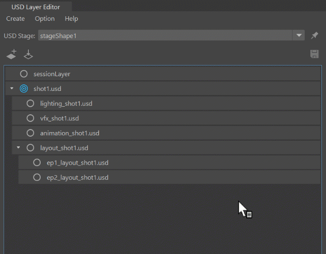

You can move layers in the USD Layer Editor to reorder your Layer Stack hierarchy. You can drag layers above, below, or on top of other layers.
Important: The session layer, root layer, and muted layers cannot be moved.
To move a single sublayer, click and hold to drag and drop the layer into a new location. To move multiple layers, use shift or control to select multiple layers to drag and drop.
The following happens when you drag a layer:
When dragged on top of another layer, a white box appears indicating that the layer will become a child of this layer.

When dragged above or below another layer, a white line appears indicating that the layer will become a sibling of the other layers.
The following rules affect placement:
If a layer is dragged over a parent layer, it becomes the first sublayer inside the parent.
If the layer being dragged is a parent, all of its descendants are also moved to the new location to preserve the existing hierarchy.
If the layers being dragged are siblings, these layers and all of their descendants are dragged to the new location as siblings.
If the layers being dragged are not siblings, these layers and all of their descendants are dragged to the new location as siblings
If the layer being dragged is set as the target layer, it remains the target layer after it is moved.
If a layer has a relative path, it cannot be parented to a new anonymous layer, because sublayers are saved as relative only to their parent layer, see Make Path Relative